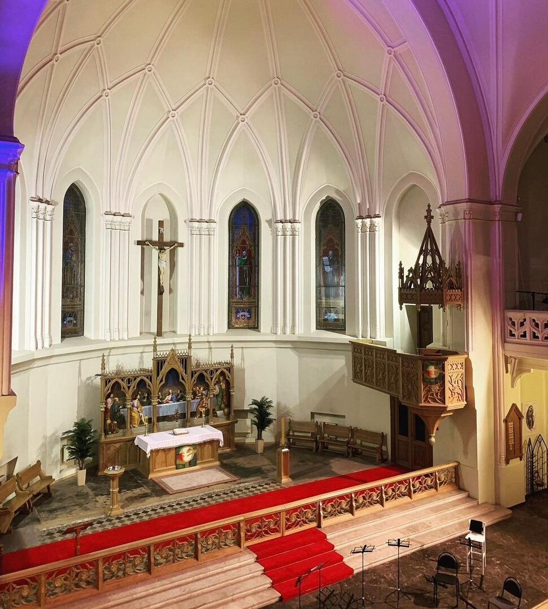
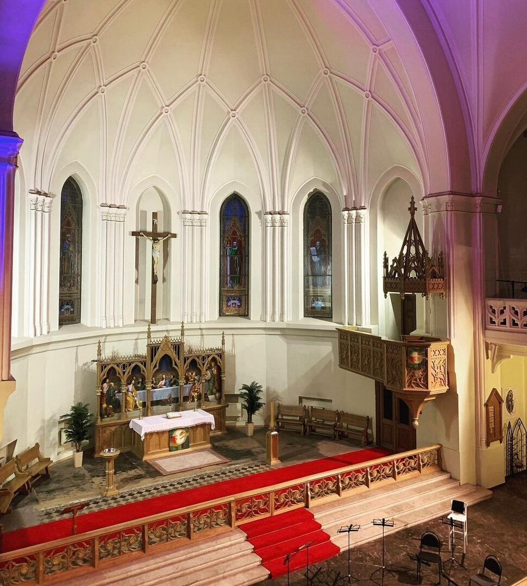

Лютеранский собор святых петра и павла
 

Уникальный архитектурный объект, который сочетает в себе элементы готического стиля и характерные черты лютеранской традиции. Собор был построен в начале 20 века и стал не только местом поклонения, но и значимой частью культурной жизни города. Периодические концерты и культурные мероприятия, проводимые в соборе, делают его центром притяжения для культурной элиты и простых горожан, ищущих духовного вдохновения
- Адрес: Старосадский пер., 7/10, Москва
- Оценка: 4,9 / 5
- Часы работы: Вс: с 10:00 до 13:00 / с 14:00 до 16:00